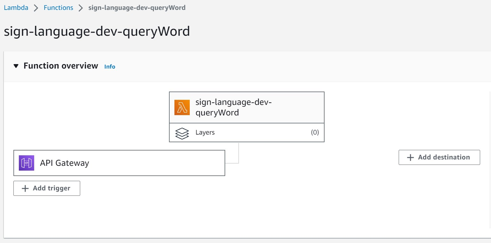

Backend Implementation#
In order to establish backend connections between the web application and the Text Search functionalities, a connection between AWS DynamoDB services and the web was essential. This was achieved by utilizing AWS Lambda, allowing the creation of a defined trigger (in this case, a text search). When this trigger is invoked, the Lambda function is called, which then directs the request to DynamoDB. Notably, two distinct text search situations had to be considered during implementation. The first is a direct text search, and the second is a “text search by sign,” where the AI’s prediction result from the sign search is used to search DynamoDB for the corresponding example video.
AWS Lambda Implementation#
For this purpose, a single Lambda function was designed to accommodate both text search situations. To achieve this, DynamoDB had to be modified to include an indexName that references the second situation. Two primary scripts, ‘build-word-query.js’ and ‘handler.js,’ are utilized within the Lambda function.

AWS Lambda Name: sign-language-dev-queryWord
handler.js:#
"use strict";
const AWS = require('aws-sdk');
const { success } = require('./shared/responses');
const { buildWordQuery , buildIAResultsQuery} = require('./queries/build-word-query');
const getItemsByWord = (word, indexType) => {
const docClient = new AWS.DynamoDB.DocumentClient();
let wordQuery;
if (indexType === 'wordSearch') {
wordQuery = buildWordQuery(word);
}
else if (indexType === 'AiResultSearch'){
wordQuery = buildIAResultsQuery(word);
}
// or else{}
return word ? docClient.query(wordQuery).promise() : docClient.scan(wordQuery).promise();
}
module.exports.queryWord = async (event) => {
const { word, indexType } = event.queryStringParameters;
const { Items } = await getItemsByWord(word, indexType)
return success(Items)
};
The ‘handler.js’ module plays a central role in managing incoming requests to the AWS Lambda function. It interacts with DynamoDB to retrieve data based on the provided parameters.
The core functionality resides within the ‘getItemsByWord’ function. This function takes ‘word’ and ‘indexType’ as parameters. Depending on the ‘indexType,’ it constructs a query using the appropriate query-building function from the ‘build-word-query.js’ module. The generated query is then executed against the DynamoDB table using the AWS.DynamoDB.DocumentClient() instance. The choice between a query or a scan operation is based on the presence of the ‘word’ parameter.
The ‘queryWord’ async function, exported from this module, serves as the entry point for Lambda invocations. It extracts the ‘word’ and ‘indexType’ parameters from the incoming event’s queryStringParameters and calls ‘getItemsByWord’ to retrieve relevant data from DynamoDB. The successful result is encapsulated in an HTTP response using the ‘success’ function from the ‘shared/responses’ module.
build-word-query.js:#
const TableName = "gloss";
module.exports.buildWordQuery = (word) => word?{
TableName,
KeyConditionExpression: '#sign_gloss = :sign_gloss',
ExpressionAttributeNames: {
'#sign_gloss': 'sign_gloss',
},
ExpressionAttributeValues: {
':sign_gloss': word,
},
} : {
TableName
};
module.exports.buildIAResultsQuery = (word) => word?{
TableName,
IndexName: 'sign_gloss_var-index',
KeyConditionExpression: '#sign_gloss_var = :sign_gloss_var',
ExpressionAttributeNames: {
'#sign_gloss_var': 'sign_gloss_var',
},
ExpressionAttributeValues: {
':sign_gloss_var': word,
},
} : {
TableName
};
The ‘build-word-query.js’ module encompasses the query-building functions employed by the ‘handler.js’ module. These functions construct DynamoDB queries tailored for specific search scenarios. The module exports two primary functions: ‘buildWordQuery’ and ‘buildIAResultsQuery.’
The ‘buildWordQuery’ function is designed to craft a query that searches for a ‘gloss’ within the DynamoDB table. It assembles a query with pertinent parameters, including TableName, KeyConditionExpression, ExpressionAttributeNames, and ExpressionAttributeValues.
The ‘buildIAResultsQuery’ function is specifically intended for constructing queries on the ‘sign_gloss_var-index’ index within the ‘gloss’ table. This function configures the query with parameters optimized for efficient indexed data searches.
Both query-building functions accept a ‘word’ parameter, using it to form a query that matches the provided word value.
React Implementation#
The implementation of the “Text Search” feature is organized within the dedicated text-search directory. This directory houses all the essential components, views, routes, and services required for text-based searches. It is structured into three primary sections: components, views, and support files. Within the components folder, you will find reusable UI elements, including the specific component responsible for AI-based text search functionality. The views folder contains the TextSearch.jsx file, where users engage with the search feature. The routes associated with this feature are defined in text-search.routes.js, ensuring smooth navigation. The feature’s logic is powered by text-search.services.js, managing the intricate process of conducting text searches. This organized structure promotes code reusability, facilitates the separation of concerns, and streamlines collaborative development efforts.
The TextSearch.jsx component is at the core of the text search implementation. This component handles the interaction with users who input keywords for conducting searches. It effectively utilizes states to manage the search status, messages, and results. It is also equipped to support an autocomplete system, which is currently disabled. Furthermore, it adeptly handles all aspects of search-related actions, encompassing error management and notifications.
The TextSearch component encapsulates the logic responsible for executing searches when users input a query and activate the “Search” button. The onSearch function responds to this event, coordinating the entire search process. This function collaborates with the textSearchService to execute the search operation, update results and messages based on the outcome, and manage any potential errors.
In addition to the underlying logic, the component’s JSX code handles rendering the search modal and presenting the results in the form of cards (Card components).
Integration with textSearchService#
The TextSearch feature seamlessly integrates with the textSearchService service, which is referenced from text-search.services.js.
Within text-search.services.js, the service encapsulates the intricate logic required for performing text-based searches using an external API, leveraging the Axios library. This service accepts a search query and an index type as input, initiates a request to the API, processes the resulting data into a customized format, and subsequently returns the transformed results.
The API request is directed to the URL defined in API_URLS.WORDS, which is specified in the axios-config file. By configuring baseURL: API_URLS.WORDS within Axios, all requests made using the Axios client (API) will have WORDS as their base URL.
The constant WORDS is defined in constants.js, housing the URL of the AWS API Gateway. This URL follows the format of https://xxxxx.execute-api.us-east-1.amazonaws.com/.
To conveniently access the API Gateway Service within your AWS account for API creation (using the HTTP protocol), employ the provided ID to construct the API URL mentioned earlier.
For the API we crafted, the following configuration was employed:
API type: HTTP
Authorization: NONE
CORS: Yes
Detailed metrics enabled: No
Method: ANY
Service principal: apigateway.amazonaws.com
Stage: $default